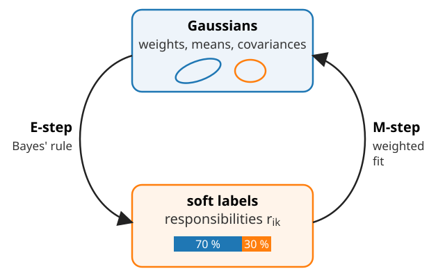
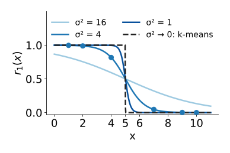
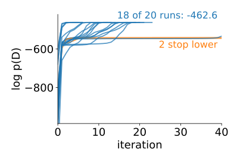
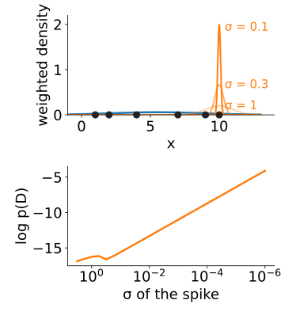
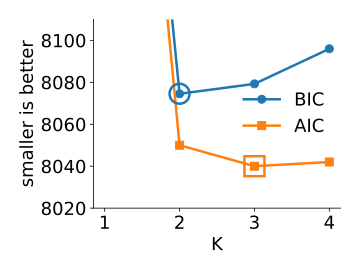

If we knew the labels (which component made each point), fitting is easy: each component gets the mean and covariance of its own points, and its weight is its share of the points.
If we knew the Gaussians, we could compute the labels: Bayes’ rule gives each point’s responsibilities.
We know neither. EM alternates between the two, starting from a guess, and keeps the labels soft: a point that is 70 % component 1 counts as 0.7 of a point there and 0.3 of a point in component 2.

The EM algorithm
Start with some \pi_k, \boldsymbol\mu_k, \Sigma_k. Repeat:
E-step (expectation): for every point i and component k, the responsibility r_{ik} = \pi_k\mathcal N(\mathbf x_i \mid \boldsymbol\mu_k, \Sigma_k) \,/\, \sum_j \pi_j\mathcal N(\mathbf x_i \mid \boldsymbol\mu_j, \Sigma_j).
M-step (maximisation): refit every component with the responsibilities as weights:
N_k = \sum_i r_{ik} (the “number of points” of component k), \pi_k = N_k / n;
\boldsymbol\mu_k = the weighted mean \frac{1}{N_k}\sum_i r_{ik}\mathbf x_i;
\Sigma_k = the weighted covariance \frac{1}{N_k}\sum_i r_{ik}(\mathbf x_i - \boldsymbol\mu_k)(\mathbf x_i - \boldsymbol\mu_k)^\top (restricted to the covariance type).
Stop when the log-likelihood \sum_i \log p(\mathbf x_i) stops increasing.
E: equal variances and weights, so r_1(x) = 1/(1 + e^{-a}) with a = [(x - 8)^2 - (x - 2)^2]/8. At x = 4: a = 1.5, r_1 = 0.82; at x = 7: a = -3, r_1 = 0.05. All six: 1.00, 0.99, 0.82, 0.05, 0.00, 0.00.
The point 4 is shared: 82 % of it pulls \mu_1, 18 % pulls \mu_2. k-means gave (2.33, 8.67).
\log p(\mathcal D): -14.94 \to -14.22 \to -14.03 \to -13.99: up at every iteration.
Try it: EM step by step
k-means is hard EM
Side by side, the same two-step loop:
k-means
EM
labels
hard: 0 or 1 (nearest centre)
soft: responsibilities r_{ik}
centres
mean of own points
weighted mean
shape
none (round, all equal)
covariance per component
size
none
weight \pi_k
objective
J goes down
log-likelihood goes up
Give every component the same round covariance \sigma^2 I and the same weight. As \sigma \to 0 the responsibilities become 0 or 1 (the nearest centre wins), and EM is k-means.
Common practice: start EM from k-means: cheap, and the centres are already in sensible places.

The math: where the M-step comes from
\log p(\mathcal D) = \sum_i\log\sum_k\pi_k\mathcal N(\mathbf x_i \mid \boldsymbol\mu_k, \Sigma_k). Differentiate with respect to \boldsymbol\mu_k:
The responsibilities appear by themselves as weights. The same with \Sigma_k gives the weighted covariance.
For \pi_k, maximise subject to \sum_k\pi_k = 1 (Lagrange multiplier \lambda): \sum_i r_{ik}/\pi_k = \lambda, so \pi_k = N_k/\lambda, and summing over k gives \lambda = n: \pi_k = N_k/n.
These are not closed-form solutions: r_{ik} depends on the parameters. EM freezes the r_{ik} (E-step), solves (M-step), and repeats.
With equal \Sigma_k = \sigma^2I, equal \pi_k: r_{ik} \propto \exp(-\lVert\mathbf x_i - \boldsymbol\mu_k\rVert^2/2\sigma^2); as \sigma \to 0 the largest term dominates and r_{ik} \to [k = \text{nearest centre}]: k-means.
Up, but only to a local maximum
Each EM iteration never decreases the log-likelihood (math slide). It increases quickly at first, then crawls.
Like k-means, EM stops at a local maximum: a bad start (two components in one group) can stay bad.
Remedies: start from k-means or k-means++ seeds; restart several times and keep the run with the highest log-likelihood.
Convergence can be slow when components overlap strongly: many iterations with tiny gains.

The math: why the likelihood cannot go down
For any distribution q_i(k) over the components (one per point), by Jensen’s inequality (\log is concave):
Equality holds for q_i(k) = r_{ik} (then the ratio inside is p(\mathbf x_i) for every k). The E-step makes the bound touch the log-likelihood at the current \theta.
The M-step maximises \sum_i\mathcal L_i(r_i, \theta) over \theta (a weighted one-Gaussian fit per component). So \log p(\mathcal D \mid \theta^{\text{new}}) \ge \mathcal L(r, \theta^{\text{new}}) \ge \mathcal L(r, \theta^{\text{old}}) = \log p(\mathcal D \mid \theta^{\text{old}}).
\mathcal L is the evidence lower bound (ELBO). The VAE day uses the same bound, with a neural network (the encoder) producing an approximate q instead of the exact E-step.
Collapse: infinite likelihood
Put one component exactly on one data point and let its variance shrink:
its density at that point is 1/\sqrt{2\pi\sigma^2} \to \infty, so \log p(\mathcal D) \to +\infty;
the other points are still explained by the other components, so nothing stops it.
The “best” fit is then nonsense: a spike on one pixel value. EM can run into this, especially with many components, small groups or outliers.
Remedies:
a variance floor: add \varepsilon I to every \Sigma_k after the M-step;
restart a component that collapses (or that becomes empty, N_k \to 0);
a prior on \Sigma_k (Bayesian mixtures; a pointer only).

Try it: EM in 2D
How many components?
The log-likelihood always grows with more parameters: more components, or full instead of spherical covariances. In the extreme, one component per point gives infinite likelihood. So it cannot choose K by itself.
Penalise the number of parameters p (count from unit 2):
Smaller is better. An extra component must pay for itself: improve 2\log p(\mathcal D) by more than its parameters cost.
BIC’s penalty grows with n (\ln 1000 = 6.9 per parameter, against 2 for AIC): BIC picks fewer components on large data sets; AIC tends to pick more.
The same criteria compare covariance types: full versus diagonal versus spherical.
BIC and AIC by hand
Intensities of n = 1000 pixels, 1D mixtures (p = 3K - 1):
K
\log p(\mathcal D)
p
BIC
AIC
1
−4210
2
8433.8
8424
2
−4020
5
8074.5
8050
3
−4012
8
8079.3
8040
4
−4010
11
8096.0
8042
From 1 to 2 components \log p gains 190: clearly worth 3 parameters.
From 2 to 3 it gains only 8: AIC (cost 2 \times 3 = 6) accepts, BIC (cost 3 \times 6.9 = 20.7) refuses.

Try it: too many components
The math: EM in general
EM works for any model with missing data\mathbf z (hidden labels, missing pixels, censored values) and observed \mathbf x (Dempster, Laird & Rubin, 1977):
E: compute the posterior of the missing data given the current \theta^{(t)}, and the expected complete-data log-likelihood Q(\theta) = E_{\mathbf z \mid \mathbf x, \theta^{(t)}}[\log p(\mathbf x, \mathbf z \mid \theta)];
M: \theta^{(t+1)} = \arg\max_\theta Q(\theta).
The Jensen argument of the previous math slide shows \log p(\mathbf x \mid \theta^{(t+1)}) \ge \log p(\mathbf x \mid \theta^{(t)}) in general. For a mixture, \mathbf z_i is the component of point i, the posterior is r_{ik}, and Q(\theta) = \sum_i\sum_k r_{ik}[\log\pi_k + \log\mathcal N_k(\mathbf x_i)].
Relatives (pointers only): variational Bayesian and Dirichlet-process mixtures (priors on the parameters and on K), mixtures of Student-t distributions (heavy tails, robust to outliers), Poisson mixtures (photon counts).
Summary
EM: E-step = responsibilities (soft labels), M-step = weighted mean, covariance and weight per component; repeat.
k-means = EM with hard labels, equal round covariances and equal weights.
The log-likelihood never decreases; EM stops at a local maximum: start from k-means, restart, keep the best.
Collapse: a component on one point has infinite likelihood; use a variance floor or restarts.
Choose K and the covariance type with BIC (p\ln n) or AIC (2p): an extra component must pay for itself.